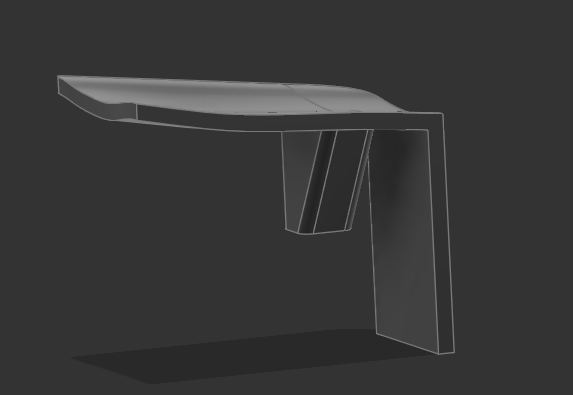
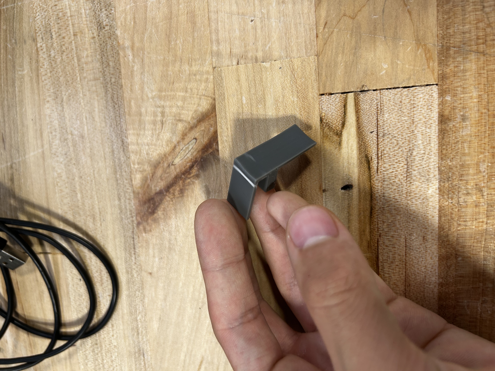
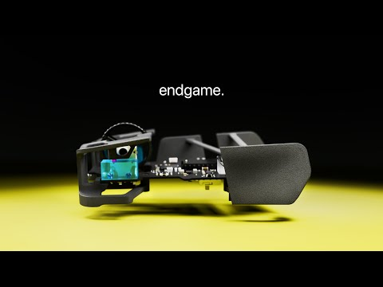
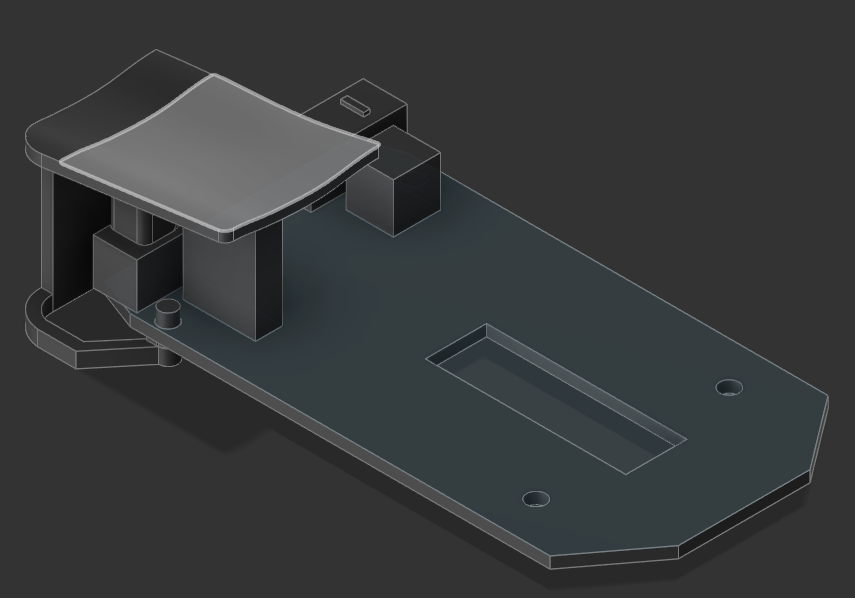

soph week 6/2-6/6
got most of my things transfered from my previous linux installation into mint so i could finally start working on things again.
i have an idea of what i want to do junior and senior year, so i wanted to finish the zeromouse soon.
errors occured though, and with the limited time due to eventual half days, finals, and other tests, this week was slightly shorter for me.
trigger
so, as you can recall from my blog post, the dimensions were a bit off.
fixing this issue fixed my problem, and i decided to try a new mechanism to attach the pcb to the stands.
first, i wanted to test the print to make sure that my idea could be printed without supports.
while printing, someone told me that my print for some reason got evicted off of the build plate, and stopped printing halfway.
so, some friends suggested that i use brim, and after some supervision, it turned out quite well.
new idea
rather than making a massive shell, i wanted to try a new approach and extend the bottom of the triggers to try and avoid making a huge shell.
this is from optimum’s new zeromouse blade, i kinda wanna do something like this
however, i will still have to create some sort of base for the sensor (as this is a cheap mouse).
in the end, the mouse looked like this:
however, printing this will be a problem, as there will be overhang that i probably cannot avoid.
now that the left trigger was done, a simple mirror would allow me to finish the right trigger right?
well, the pcb is weird, and the hole on each side is different, so i had to edit the bottom part of the right side a bit.
now that my triggers are done, i can start extending and making the “shell” for the mouse. additionally, i still need to figure out a minimalistic way to add the sensor holder and a way to print the mouse.